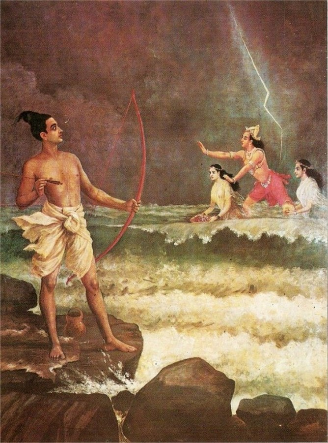
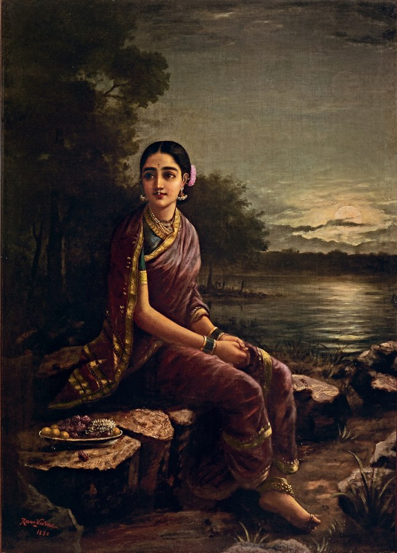

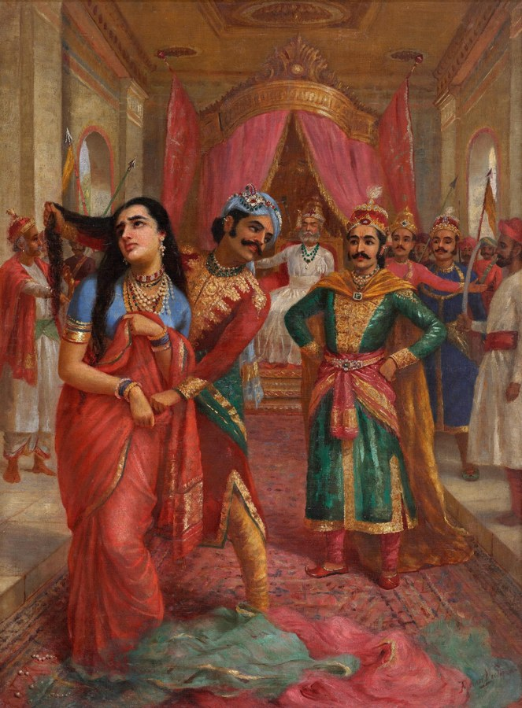
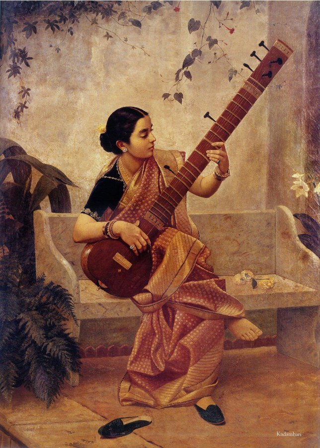
CS F407 Artificial Intelligence · Final project
The Next
Ravi Varma
Text-to-image generation of scenes from the Indian epics, in the oil-painting style of Raja Ravi Varma
TEAM THE UNSUPERVISED
Aditya Kalra
2024A7PS0536G
Eshan Singhai
2024ADPS0836G
Rishit Khanna
2024A3PS0343G
Mayank Bhojwani
2024A7PS0639G
Two inputs. One painting.
a scene in words · an optional photo of someone posing
“Chitrangada, the warrior princess, drawing her bow”
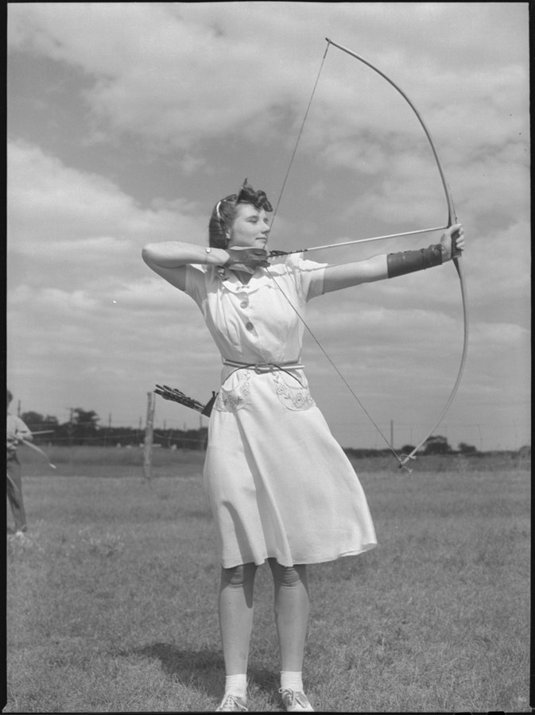
→
“Vibhishana standing with folded hands, asking Rama for refuge”
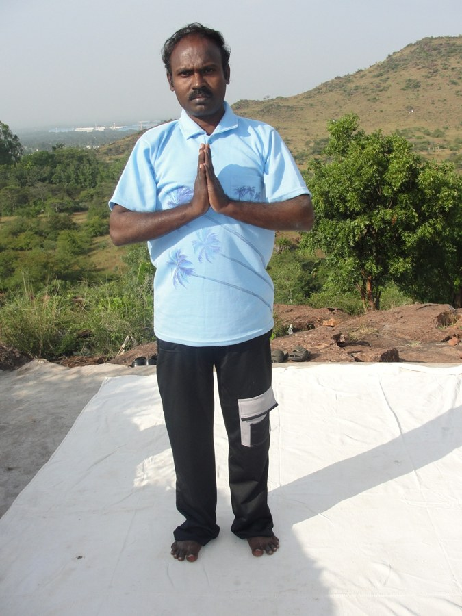
→

“Satyabhama in a battle stance on the battlefield”
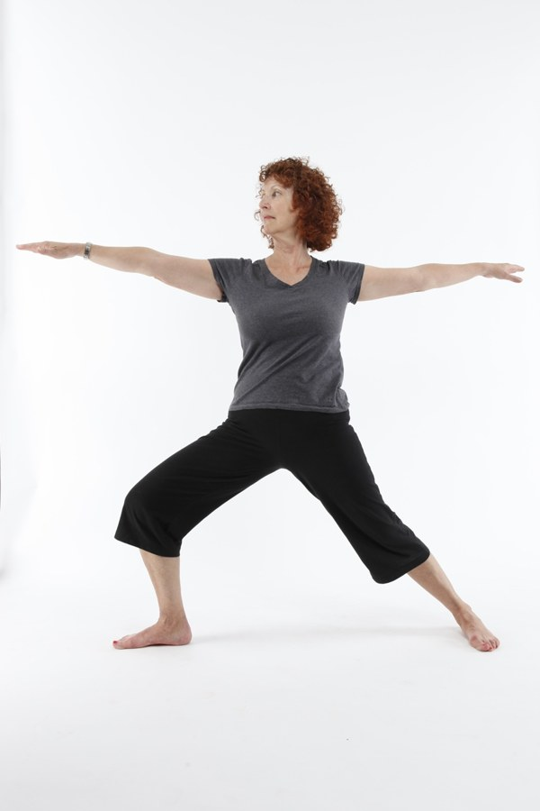
→
Four milestones, one pipeline
01 · DATA
61 oil paintings, captioned by a vision-language model

02 · STYLE
a 3 MB LoRA on Stable Diffusion 1.5
03 · WORDS
LLM prompt expansion + best of four
04 · POSE
OpenPose + ControlNet, in a web app
Teaching the model his brushwork
W′ = W + B·A · rank 4 · 3 MB · SD 1.5 frozen
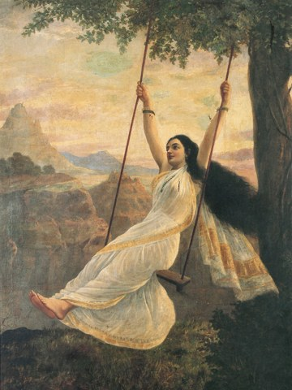
His original (held out)
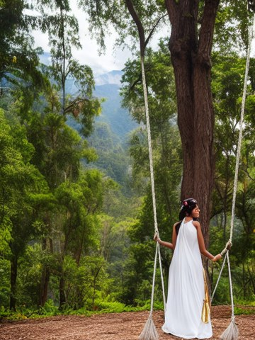
Plain SD · a photo

“Ravi Varma” prompt · a print
Our LoRA · oil
Photo, skeleton, painting


The pose photo · Hanuman
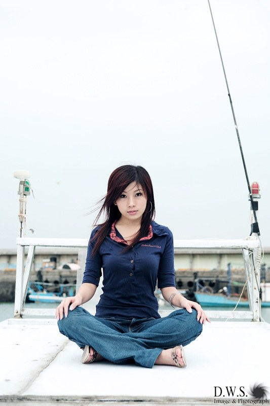
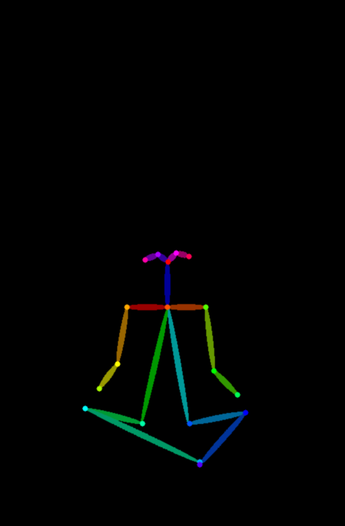
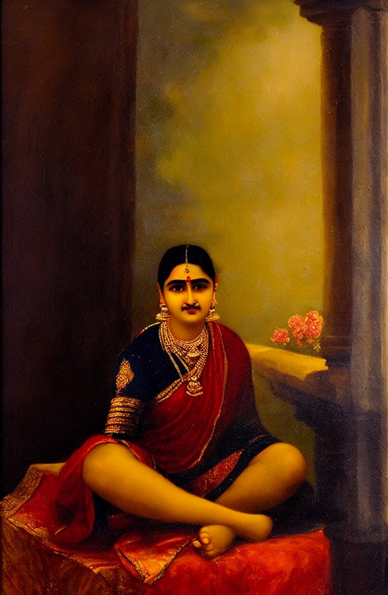
The pose photo · Shakuntala
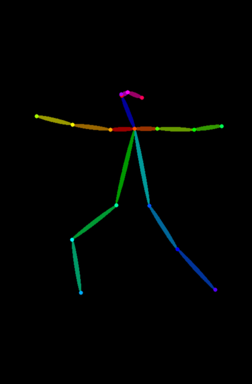
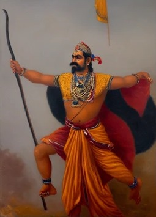
The pose photo · Bhima
OpenPose photo → skeleton
ControlNet skeleton → painting
+ character looks · pose-checked best of four · high-res refine
Text alone vs text + pose
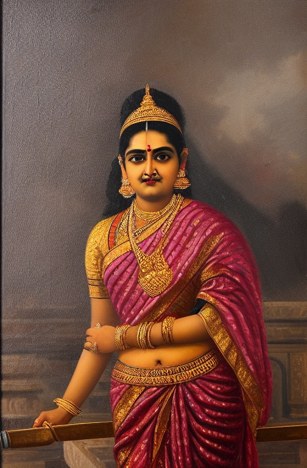
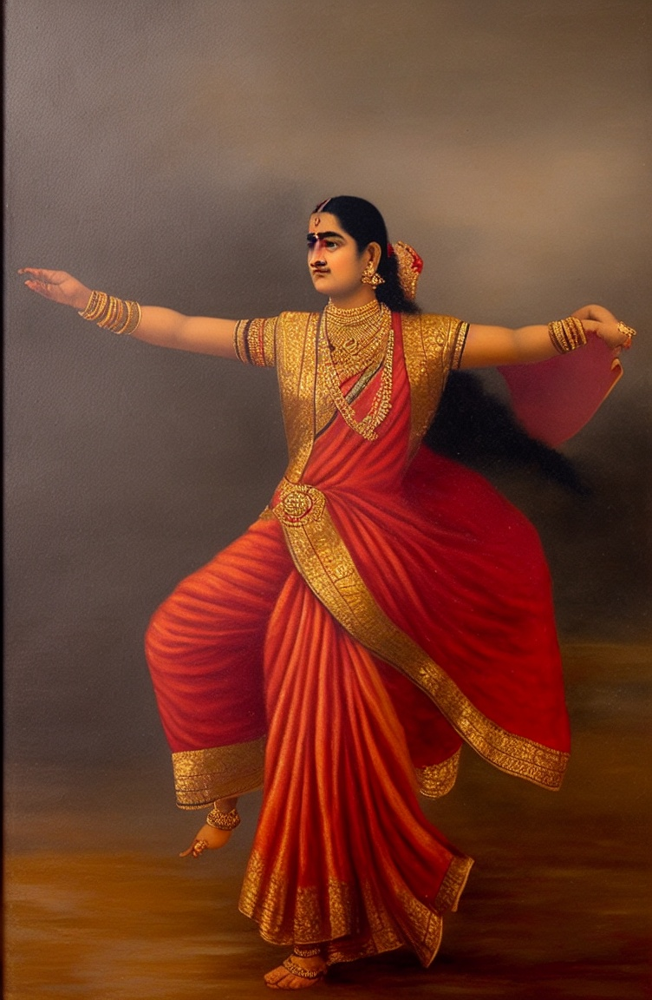
TEXT
+ POSE


TEXT
+ POSE
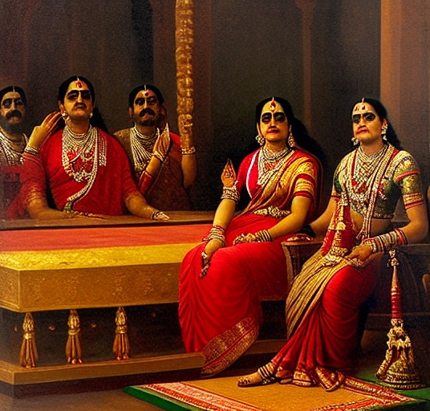
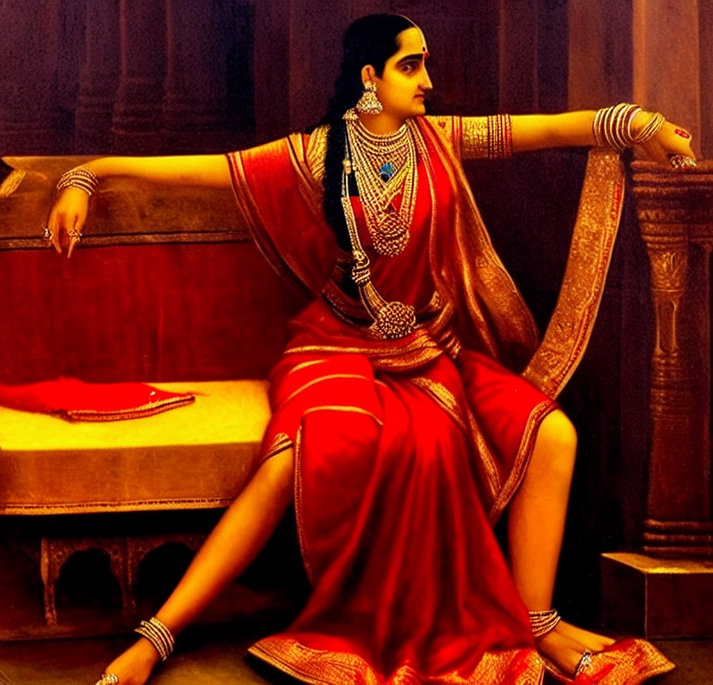
TEXT
+ POSE
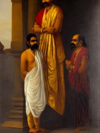

TEXT
+ POSE
10%
→
97%
of the pose's joints in the right place
28.2 → 28.6
scene match: no loss